import seaborn as sns
import matplotlib.pyplot as plt
import numpy as np
import pandas as pdseaborn(1)–seaborn특징,boxplot,lineplot
강의영상
https://youtube.com/playlist?list=PLQqh36zP38-yKl-lbn597pdBzbYRDj2i_
imports
seaborn 특징
- 특1: 입력으로 데이터프레임을 선호한다. (matplotlib은 array를 선호)
- 그렇다고 해서 데이터프레임이 아닌 경우 그림이 아예 안 그려지지는 않는다.
- 데이터프레임 형태는 long form 과 wide form 이 있다. (ref) // 참고로 long form이 더 우수한 저장형태에요!
- wide-df = [array1,array2,array3]
- long-df = [array_val, array_cat]
- 특2: matplotlib을 존경함. (ref)
sns boxplot
- 데이터: 전북고등학교
y1=[75,75,76,76,77,77,79,79,79,98] # A선생님에게 통계학을 배운 학생의 점수들
y2=[76,76,77,77,78,78,80,80,80,81] # B선생님에게 통계학을 배운 학생의 점수들 plt 복습
plt.boxplot([y1,y2]);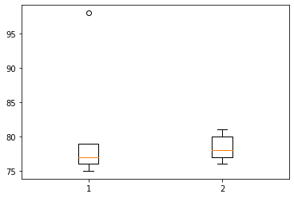
sns wide df
df1=pd.DataFrame({1:y1,2:y2})
df1| 1 | 2 | |
|---|---|---|
| 0 | 75 | 76 |
| 1 | 75 | 76 |
| 2 | 76 | 77 |
| 3 | 76 | 77 |
| 4 | 77 | 78 |
| 5 | 77 | 78 |
| 6 | 79 | 80 |
| 7 | 79 | 80 |
| 8 | 79 | 80 |
| 9 | 98 | 81 |
- 예시1
sns.boxplot(data=df1)
#sns.boxplot(data=np.stack([y1,y2],axis=1)) # <- 잘 쓰진 않아요, 그냥 심심해서 해봤는데 되더라고요..?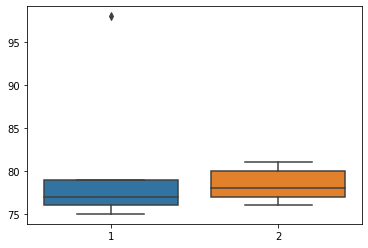
sns long df
df2=pd.DataFrame({'score':y1+y2,'class':['A']*len(y1)+['B']*len(y2)})
df2| score | class | |
|---|---|---|
| 0 | 75 | A |
| 1 | 75 | A |
| 2 | 76 | A |
| 3 | 76 | A |
| 4 | 77 | A |
| 5 | 77 | A |
| 6 | 79 | A |
| 7 | 79 | A |
| 8 | 79 | A |
| 9 | 98 | A |
| 10 | 76 | B |
| 11 | 76 | B |
| 12 | 77 | B |
| 13 | 77 | B |
| 14 | 78 | B |
| 15 | 78 | B |
| 16 | 80 | B |
| 17 | 80 | B |
| 18 | 80 | B |
| 19 | 81 | B |
- 예시1
sns.boxplot(data=df2,x='class',y='score') 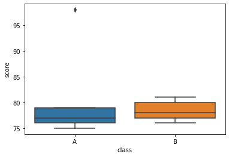
sns: array
- 예시1
sns.boxplot(data=y1)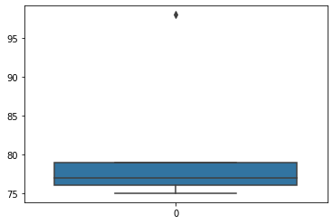
- 예시2
sns.boxplot(y=y1)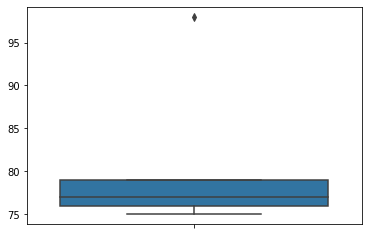
- 예시3
sns.boxplot(x=y1)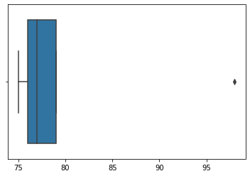
sns histplot
- 데이터
x= np.random.randn(10000)
y= np.random.randn(10000) +1plt 복습
- 예시1
plt.hist(x,alpha=0.5)
plt.hist(y,alpha=0.5);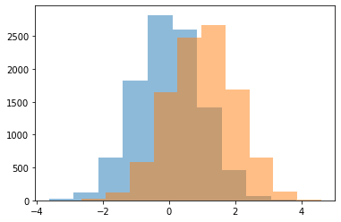
- 예시2
plt.hist([x,y]);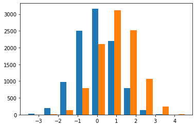
sns: wide df
df1=pd.DataFrame({'x':x,'y':y})
df1| x | y | |
|---|---|---|
| 0 | -2.110587 | 0.712687 |
| 1 | 0.176404 | 1.587615 |
| 2 | 0.592212 | 0.362025 |
| 3 | 0.957655 | 0.485939 |
| 4 | 1.689412 | 0.582304 |
| ... | ... | ... |
| 9995 | -0.935895 | 0.047778 |
| 9996 | 1.521599 | 1.946658 |
| 9997 | -0.595255 | 0.671715 |
| 9998 | 0.952991 | 2.263997 |
| 9999 | 0.850642 | 1.578771 |
10000 rows × 2 columns
- 예시1
sns.histplot(data=df1)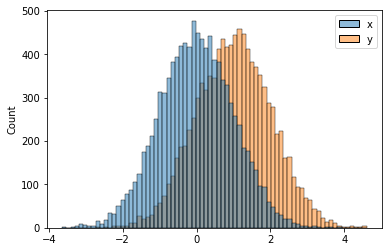
- 예시2
sns.histplot(data=df1,bins=20)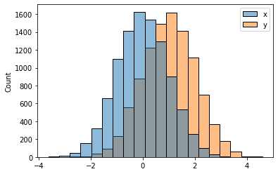
- 예시3
sns.histplot(data=df1,bins=20,kde=True)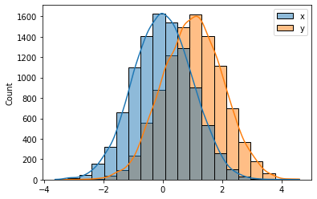
- 예시4
sns.histplot(data=df1,bins=20,kde=True,element="step")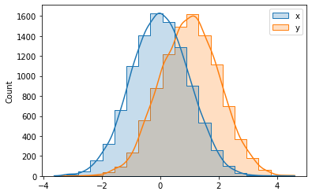
- 예시5
sns.histplot(data=df1,bins=20,kde=True,element="step",lw=5) # mpl에 대한 존경심 확인 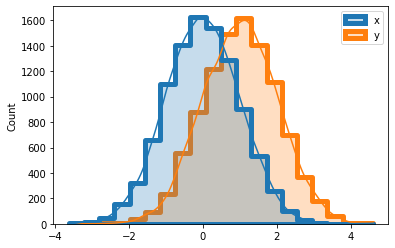
sns: long df
df2=pd.DataFrame({'val':np.concatenate([x,y]), 'var':['x']*len(x) + ['y']*len(y)})
df2| val | var | |
|---|---|---|
| 0 | -2.110587 | x |
| 1 | 0.176404 | x |
| 2 | 0.592212 | x |
| 3 | 0.957655 | x |
| 4 | 1.689412 | x |
| ... | ... | ... |
| 19995 | 0.047778 | y |
| 19996 | 1.946658 | y |
| 19997 | 0.671715 | y |
| 19998 | 2.263997 | y |
| 19999 | 1.578771 | y |
20000 rows × 2 columns
- 예시1
sns.histplot(data=df2,x='val',hue='var',bins=20,kde=True,lw=0)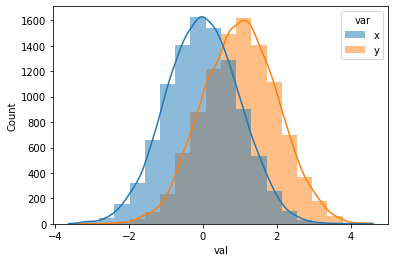
- 예시2
sns.histplot(data=df2,y='val',hue='var',bins=20,lw=0,kde=True)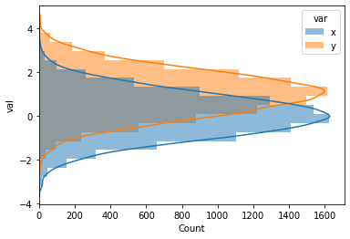
sns: array
- 예시1
sns.histplot(data=x)
- 예시2
sns.histplot(x=x)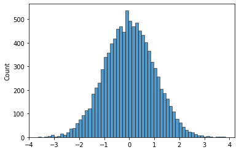
- 예시3
sns.histplot(x=x,color='C0',bins=20,lw=0)
sns.histplot(x=y,color='C1',bins=20,lw=0)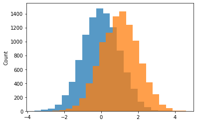
sns lineplot
- data
np.random.seed(43052)
ϵ = np.random.randn(100)y = np.cumsum(ϵ)plt 복습
plt.plot(ϵ,'--o')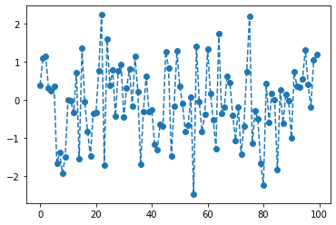
plt.plot(y,'--o')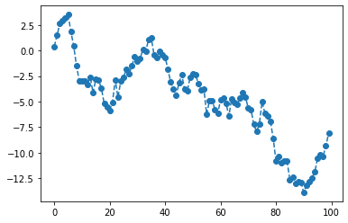
sns: array
- 예시1
sns.lineplot(data=ϵ)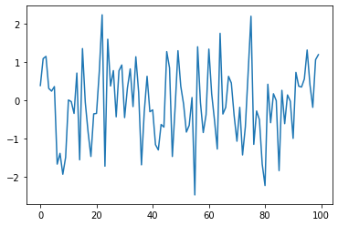
- 예시2
sns.lineplot(data=y)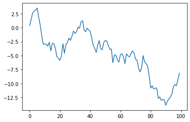
sns: wide df
df1=pd.DataFrame({'eps':ϵ, 'y':y})
df1| eps | y | |
|---|---|---|
| 0 | 0.383420 | 0.383420 |
| 1 | 1.084175 | 1.467595 |
| 2 | 1.142778 | 2.610373 |
| 3 | 0.307894 | 2.918267 |
| 4 | 0.237787 | 3.156054 |
| ... | ... | ... |
| 95 | 1.308688 | -10.598788 |
| 96 | 0.405376 | -10.193412 |
| 97 | -0.185070 | -10.378481 |
| 98 | 1.055388 | -9.323094 |
| 99 | 1.187014 | -8.136079 |
100 rows × 2 columns
- 예시1
sns.lineplot(data=df1)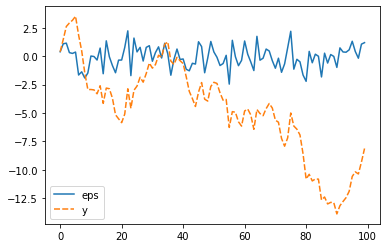
- 예시2
sns.lineplot(data=df1,dashes=False)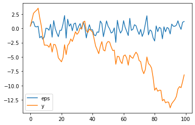
- 예시3
# sns.lineplot(data=df1,dashes=[(3,1),(3,1)]) # 이코드는 최신버전의 sns에서 동작하지 않으므로 삭제합니다. (collab 에서는 정상동작)- 예시4
# sns.lineplot(data=df1,dashes=[(3,1),(15,3)],markers=['o','o']) # 이코드는 최신버전의 sns에서 동작하지 않으므로 삭제합니다. (collab 에서는 정상동작)sns: long df
df2= pd.DataFrame({'idx':list(range(100))*2,'val':np.concatenate([ϵ,y]),'cat':['eps']*100 + ['y']*100 })
df2| idx | val | cat | |
|---|---|---|---|
| 0 | 0 | 0.383420 | eps |
| 1 | 1 | 1.084175 | eps |
| 2 | 2 | 1.142778 | eps |
| 3 | 3 | 0.307894 | eps |
| 4 | 4 | 0.237787 | eps |
| ... | ... | ... | ... |
| 195 | 95 | -10.598788 | y |
| 196 | 96 | -10.193412 | y |
| 197 | 97 | -10.378481 | y |
| 198 | 98 | -9.323094 | y |
| 199 | 99 | -8.136079 | y |
200 rows × 3 columns
- 예시1
sns.lineplot(data=df2, x='idx',y='val',hue='cat')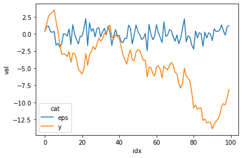
- 예시2
sns.lineplot(data=df2, x='idx',y='val',style='cat',hue='cat',markers=True)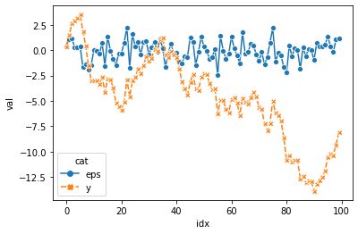
- 예시3
sns.lineplot(data=df2, x='idx',y='val',style='cat',hue='cat',dashes=[(3,1),(3,3)],markers=['o','o'])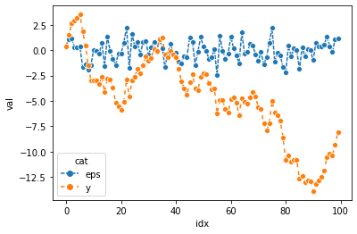
숙제
- 아래의 그림에 대응하는 그림을 seaborn을 이용하여 그려라.
y1 = np.random.randn(90).cumsum()
y2 = np.random.randn(120).cumsum()plt.plot(y1,'--o')
plt.plot(y2,'--o')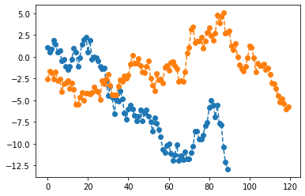